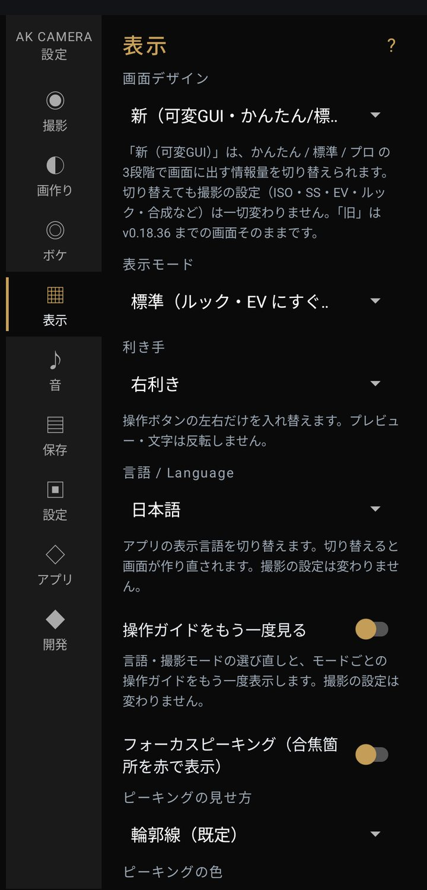

設定：表示

撮影画面の見え方。写真の中身は変わりません。
- 画面デザイン初期値 新
- 旧（v0.18.36 までの画面） / 新（可変GUI・かんたん/標準/プロ） ふだんは「新」のままで。「旧」はテスト版のころの画面です。
- 表示モード（縦持ち）初期値 標準
- かんたん / 標準 / プロ（06）。
- 利き手初期値 右利き
- 操作ボタンの左右だけを入れ替えます。プレビューや文字は反転しません。
- 言語 / Language
- 日本語 / English。切り替えると画面が作り直されます。撮影の設定は変わりません。
- 操作ガイドをもう一度見る
- ON にして撮影画面へ戻ると、初回起動のときのガイド（言語・表示モードの選び直しと操作の説明）がもう一度出ます。
- フォーカスピーキング初期値 OFF
- ピントが合っている輪郭に色を付けます。見せ方は「輪郭線」か「面塗り（半透明）」、色は赤・黄・青。 赤い被写体で見失うときは黄か青に。無地の壁や空のように模様がない面は塗られません。最大解像度では使えません。
- 構図グリッドの種類初期値 三分割法
- 三分割法 / 対角線構図 / ファイ・グリッド / フィボナッチ螺旋 / 四分割。表示の ON/OFF は撮影補助の「構図グリッド」で。
- 水準器を表示初期値 OFF
- 画面中央に水平のバーを出します。左右の傾きが ±1° 以内になると緑に変わります。
- プレビューを実際の写真と同じ色にする初期値 ON
- 保存するときと同じ色の処理をプレビューにも掛けます。ON だと表示は少しやわらかくなり、暗いところでは動きがなめらかでなくなることがあります。プレビューがカクつくときは OFF にすると軽くなります（その場合、画面の色は近似になります）。
- シャッター時の画面切替色初期値 黒
- シャッターを切った瞬間に画面を一瞬切り替える色です。黒 / 白 / 切替表示なし。